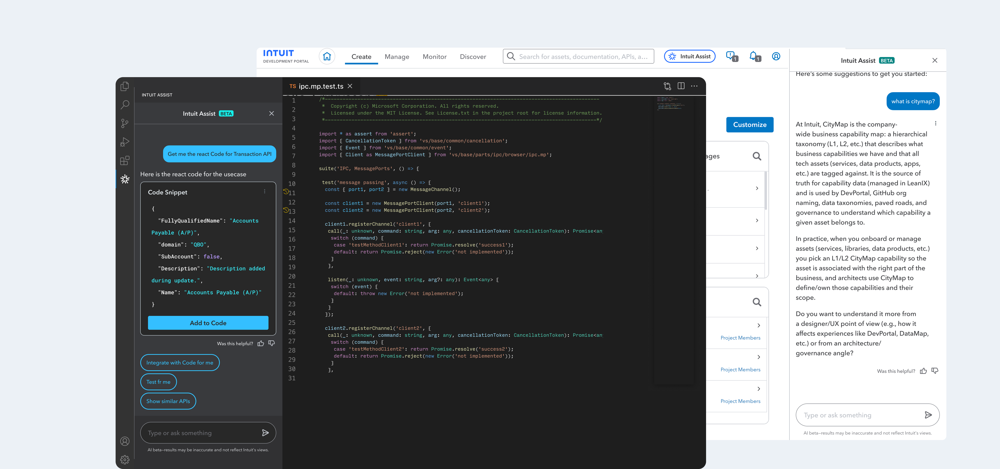

Intuit Assist – GenAI-Powered Developer Assistant

Overview
Developers across the platform lose meaningful time not in the building, but in the finding — searching for the right API, tracking down a reusable component, or digging through Slack for an answer that's already been given a dozen times. To solve this, we embedded a shared AI intelligence layer across the three surfaces where developers spend most of their time: the portal, the IDE, and Slack — so the right answer surfaces in context, without breaking flow.
Strategy
Meet developers where they already work, with AI that understands intent — not just keywords. One shared intelligence layer, expressed across every surface that slows them down.
Dev portal
Discover docs, assets, components
IDE
In-editor contextual assistance
Slack
Auto-answer support queries
Shared intelligence layer
Single retrieval and reasoning backbone — consistent answers across every surface
Internal docs
Dev portal content
GitHub
Repos and assets
Design system
Components, tokens
API specs
References, schemas
Slack history
Past Q&As, threads
Solution
Intuit Assist was framed as the primary developer-facing experience for GenAI-assisted workflows—moving from fragmented tooling toward guided discovery and generation. Delivery progressed through Alpha and Private Beta with explicit content rendering needs: markdown, code blocks, and GenUX components. Knowledge sources evolved in parallel, which influenced pacing for dependency mapping and integration milestones.
Impact & outcome
Early UX measurement benchmarks from the deep dive: ~40% answer accuracy in early evaluations; feedback skewed roughly 60% negative to 40% positive—expected for a fast-moving beta—with follow-up mechanisms (homes, structured feedback) planned to tighten the loop.
Qualitative signal: teams valued directionally correct guidance even when responses needed refinement.
Operational challenges called out in the deck included dependency on GenUX for new components, integrating GenUX surfaces into Assist, and building knowledge sources concurrently with the product—informing sequencing for subsequent quarters.
Established a shared narrative for GenAI-assisted Developer Experiences—bridging GenUX, portal, and IDE—with a transparent roadmap toward accuracy (prompt gallery, streamlined feedback), richer rendering formats, and more context-aware responses.